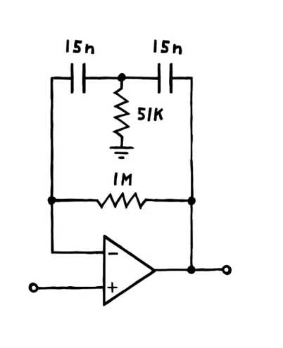
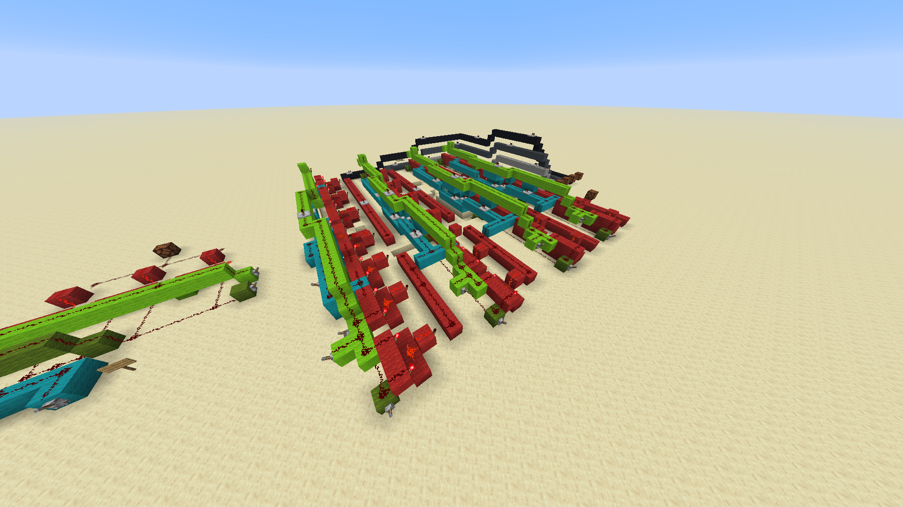
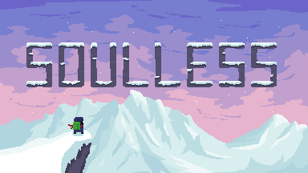
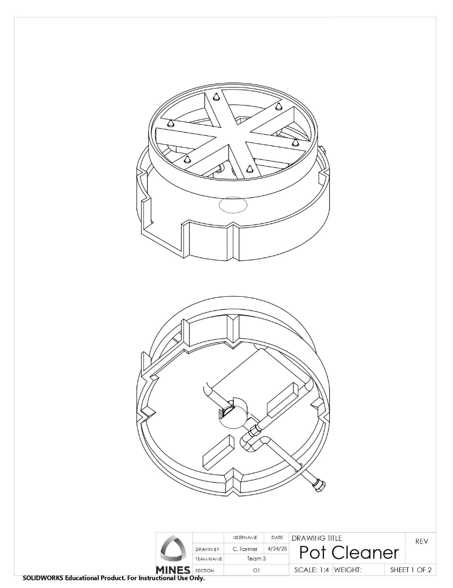
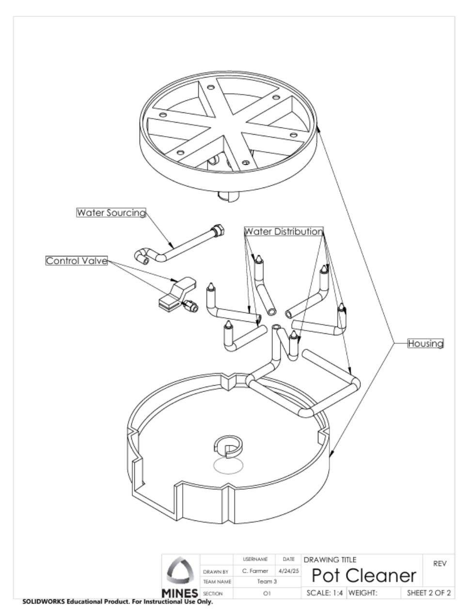
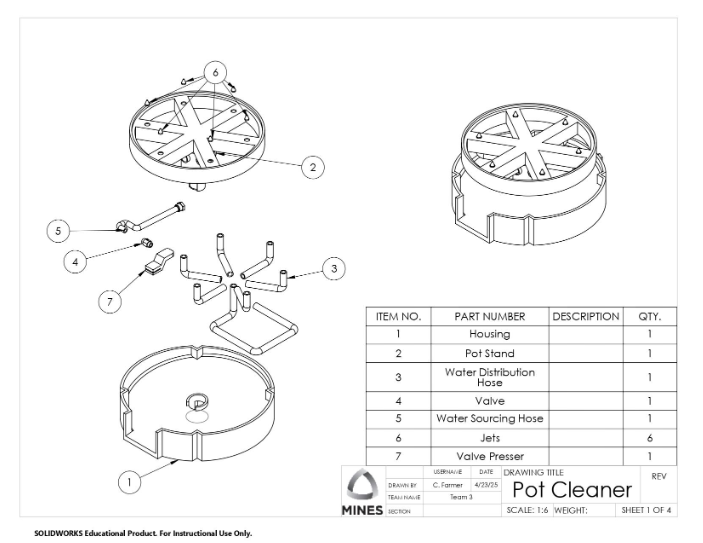
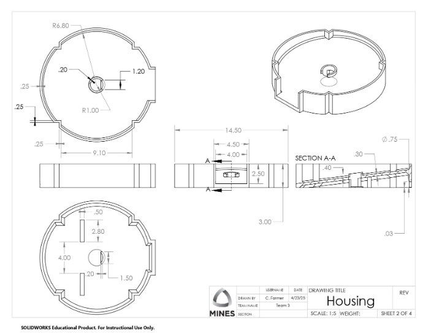
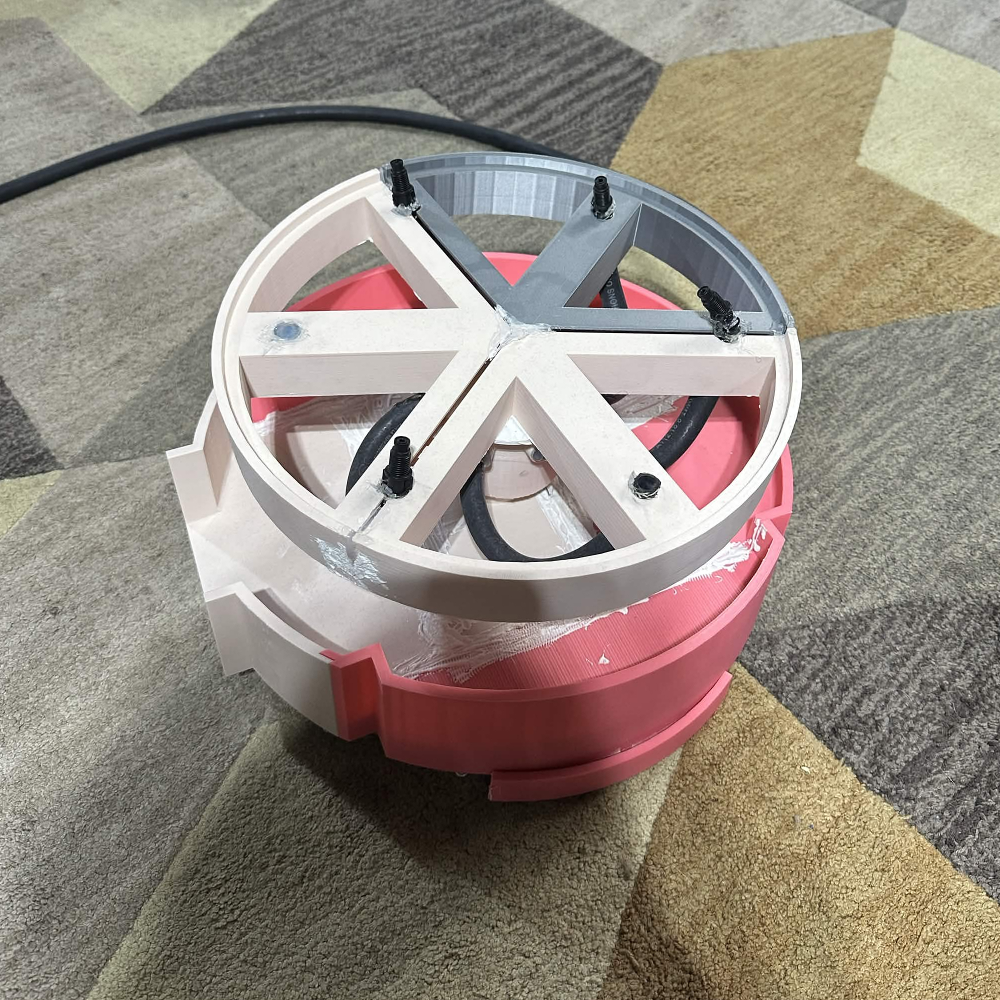

Projects
This page is for all of my various engineering (and non-engineering) projects
Table of contents
- Electrical Engineering
- Computer Software
- Misc
I. Electrical Engineering
Astable Multivibrator
Utilizing an online resource (which can be found here), I was able to build an astable multivibrator using my own resistors and capacitors at home. Curious how it worked, I read the provided resource carefully and did my own analysis on it to figure out how it worked. I have since repurposed this circuit on multiple occasions for various projects shown below.
On this project, I learned how to use online EE resources and use my circuit analysis skills on a novel non-school project.
Shift Register Lights
Using the Astable Multivibrator from above, I had a Texas Instruments 74HC595 Shift Register I wanted to utilize. I had learned of shift registers from my Digital Logic class, so I wanted to see how they worked in the real world. After finding the datasheet for the 74HC595, I got to work wiring up the circuit to 8 LEDs. I encountered a few issues with misunderstanding which pins were Active Low, but after debugging using my circuit analysis skills, I was able to get the result in the video!
On this project, I learned how to find online datasheets, diagnose issues with datasheets, and effectively use multimeters.
Kick Drum (current project)
Finally, after working on those projects, I wanted to create a kick drum that I could then automate using the shift register.

First, I needed to make the drum itself. Utilizing an online schematic (shown to the left), I was able to create the first part of the circuit that creates the inital kick signal.
Presently, I am working on the Gate-To-Trigger converter. The way the kick works with capacitors, it creates a signal on each charge OR discharge. A Gate-To-Trigger converter would make the charge and discharge occur almost simultaneously, leading to one kick every pulse.
On this project, I learned how to find online datasheets, diagnose issues with datasheets, and effectively use multimeters.
 I had loved my Digital Logic class, and over the summer I was left really wanting to practice the skills I had learned. However, because I was out for the summer, I had no access to the Mines lab for some time. Being too impatient with this, I decided to use what I had, Minecraft. Minecraft is a sandbox video game, where the world is divided into distinct voxels. It also has an internal logic system called Redstone, which just so happens, can be configured to make basic AND, OR, and NOT logic gates. Using this, I built a 4-bit calculator. I redid all of the calculations for the K-map on a piece of paper, and was able to recreate all the gated logic in Minecraft! Some photos of my work and a video of the calculator working can be seen below. For context, the least significant bit of the adders is furtherst to the left, while on the output display it will be on the right. Below we can see the adder correctly outputing 1+1=2 To demonstrate further, here is a video of a variety of inputs being correctly processed, starting with 5+4=9, changing bits and displaying the output as I go My senior year of high school, I was in a class called STEM Projects, in which we had to choose a project to complete for the semester, and were given complete reign afterwards with how to use classtime. I had just learned C++, and so wanted to make a basic physics engine after being inspired by reading articles of others doing likewise. The result was what I called SydPhys (Syd being an abbreviation of my username, Sydmen, a mispronunciation of my real name). Although I wasn't able to complete all my goals by the end of the class, I was able to create an engine that supported sprite rendering using SDL and a full physics response system between non-rotating boxes and circles. My senior year of high school, I was also in a robotics club for the FIRST Robotics leauge. I was on Team 3200, representing Eaglecrest High School. I served as a computer programmer, and was tasked with redesigning the automated routine of the robot. In FIRST Robotics, the first part of each game is to have the robot operate fully autonomously. Our present system was a hard-coded routine that was decided upon once, with no dynamic behavior. My task was to redesign this system to allow for more dynamic behavior, while also creating a system that future programmers could use when I left. I decided upon using a finite state machine system for this behavior. Our robot was programmed in Python and converted using C to raw code on the robot. I wrote all of the FSM archeticture in Python, providing routine documentation as I went. Due to other software issues, I was unable to deploy this code onto the robot. In the meantime, I wrote full Markdown documentation and provided Mermaid flow chart diagrams for all the FSMs that I created. The result of this can be seen here
4-bit Calculator in Minecraft
II. Computer Software
SydPhys
Github Repository
Robotics Finite State Machine
Although I could not deploy the code before I left, due to various unrelated compiler issues, I learned so much about proper code documentation, finite state machines, and Github repo management while on this project.
GMTK Game Jame 2021 Entry (Soulless)
Play the game here!I have been programming for quite a long time. I started learning how to program to make video games. During 2021, my brother had begun to also take up pixel art as a hobby. We started to make games with each other for fun, often ending in unfinished, but charming little projects.
One YouTube channel we watched quite often was called the Game Maker's Toolkit. It was a YouTube video essay channel which explored game devlopment concepts, such as how to make combat feel engaging, effective sound design, among others.
This channel hosted a yearly game jam competition. A game jam competition is where you must make a video game adherant to a theme, announced at the beginning, in a certain amount of time. The GMTK game jam was to be hosted over a 2-day period. My brother and I decided to enter together as a team. I was to handle all game engine logic, programming, and sound design. My brother worked as the pixel artist for all sprite assets.
The theme was announced as the phrase "Joined Together". My brother and I devised a plan to make a game about a mysterious hiker, with the ability to seperate his soul from his body. This soul could not last long without its body, which meant they were joined togehter. This game would be called Soulless.

After making the game, you are then ranked by others in the game jam on three criteria. Fun, Presentation, and Originality At the jam's conclusion, you are then given a final, public ranking of the game's place in the competition. Our game was able to place #189 out of 5,633. The final full submission can be seen here. We even got in the final showcase video at 0:33.
This game can be played here. The game didn't stop development there. I added a simple leaderboard to time how fast the game was fully played. I then distributed this to my friends, which started a small speedrunning community, in which we all attempted to break my own game in order to beat it as fast as possible. The leaderboard remains up to this day.
III. Miscellaneous
Computer Aided Design
As seen in my experience, I am a Certified SolidWorks Expert. My best project done with this certification was my Mines Cornerstone project, in which I designed a complex housing unit for a pot cleaner.




This was then assembled by me using the Colorado School of Mines 3D printers, using 10 seperate prints in order to make them fit within the printers.

Music
Here are a couple songs I've made over the past 2 years with their project titles/brief description.
---->>>>VOLUME WARNING FOR ALL OF THE TRACKS. THEY WERE MIXED TO BE LOUD.<<<<----
Neon Indian
I love the artist Neon Indian, so I tried to recreate his sound.
Unreleased Cave Ambience
My biggest inspiration is without a doubt, video game soundtracks, so I made one for a game I never released.
Galaxy
If you can't tell by now, I am a complete chump for reverb. I made this piano song inspired by Super Mario Galaxy.
Untitled
I'm a big fan of drawn back, simplistic, electronic production, as seen with Aphex Twin and C418. This was my attempt at that
Sil
I had recently played the game Silent Hill 2, and was deeply inspired by the soundtrack when I made this song.
Challenge
It should be clear now that I love electronic music, and especially the Amen break. This was my challenge to myself to make a full song with the amen break drum chops.
Washing the Dishes
I made this song after washing the dishes while listening to ambient music. A very long song indeed.